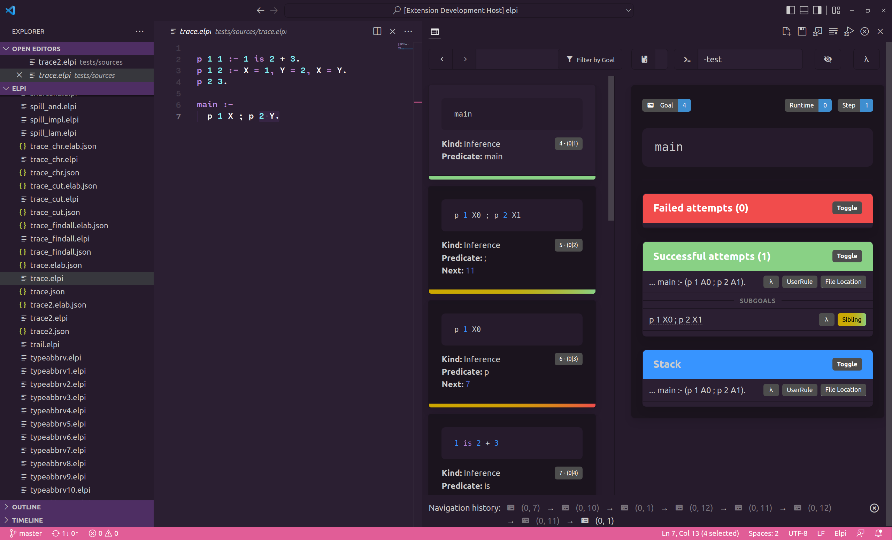

Debugging and tracing
The tracing facility
Elpi’s interpreter is instrumented. Each traced event is one application of a
rule of Formal semantics: curgoal marks the goal now
active, rule the backchain step that picks a clause for it, newgoal
the premises that step pushes, assign an extension of the substitution,
new-hyps and new-quant the ==> and pi steps. The operational
semantics rewrites a single configuration and keeps no call stack, so the
event stream is flat and linear; a separate elaborator rebuilds the goal
tree from the parent/child links in the stream, and that reconstructed tree is
what the interactive browser shows.
elpi prog.elpi -test -trace-on -trace-at run 1 9999 -trace-only 'user:'
prints one line per traced event (a goal selected (run), a rule tried
(select), a variable assigned (assign), and more) between step 1 and
step 9999 of the run trace point:
$ elpi prog.elpi -test -trace-on -trace-at run 1 5 -trace-only 'user:'
rid:0 step:1 gid:4 user:curgoal = main ...
rid:0 step:1 gid:4 user:rule = backchain
rid:0 step:1 gid:5 user:newgoal = double 5 X0
...
-trace-only-pred REX narrows the trace to goals matching a predicate
name; -trace-skip REX excludes matching items instead. Events prefixed
user: come from the program; dev: ones are for debugging Elpi itself.
trace.counter "NAME" N reads a named counter ("run" counts solved
goals) for a program to condition its own debug output on, the way
std.spy does.
elpi prog.elpi -test -trace-on json FILE -trace-at run 1 9999 writes a
machine-readable trace instead of a text one. elpi-trace-elaborator, a
separate binary shipped with Elpi, reads such a trace from standard input and
groups it into “cards”, one per step with its rule and its subgoals; the VS
Code extension’s trace browser (Getting started) displays them and
steps through them interactively, rather than as a flat log:
{kind=link}

The trace browser.
The spy predicate
std.spy G runs G and prints it on entry, and again on exit or on
failure, through std.debug-print, so it is subject to the same
overriding as any other library hook (The standard library). std.spy!
is the same with a cut, for a goal that should only ever succeed once.
code/spy-tour.elpi:
1% std.spy prints a call's arguments on entry and on exit (or failure),
2% without needing any command-line flag.
3
4pred double int -> int.
5double X Y :- Y is X * 2.
6
7main :- std.spy (double 5 R), print "result:" R.
----<<---- enter: double 5 X0
---->>---- exit: double 5 10
result: 10
Debugging the parser
elpi -print-ast FILE prints a program as parsed, before any compilation
pass; elpi -print FILE prints it after most of them, spilling
(Spilling) included, so any question about how a particular
piece of surface syntax desugared can be checked directly. elpi FILE -deps
prints the accumulate graph of FILE and everything it pulls in, as a
Graphviz digraph, useful for untangling a large project’s file structure
(File structure and attributes).
Conditional debug rules
A debug rule can be removed from the program entirely, rather than merely
kept quiet: :if "NAME" (Rule attributes) drops a rule at
compile time unless NAME is defined with elpi -D NAME, so a
trace-style helper costs nothing when debugging is off, instead of
running and choosing not to print:
code/conditional.elpi:
1% A debug-only rule: present in the program, but only fires when the
2% compiler variable DEBUG is defined (run with `elpi conditional.elpi -test
3% -D DEBUG` to see it fire).
4
5func trace string.
6
7:if "DEBUG"
8trace Msg :- print "[debug]" Msg, !.
9trace _.
10
11main :- trace "checkpoint 1", print "done".
done
Compiled plain, the guarded rule is gone and trace falls through to the
catch-all, printing nothing; -D DEBUG compiles it back in:
$ elpi conditional.elpi -test -D DEBUG
[debug] checkpoint 1
done